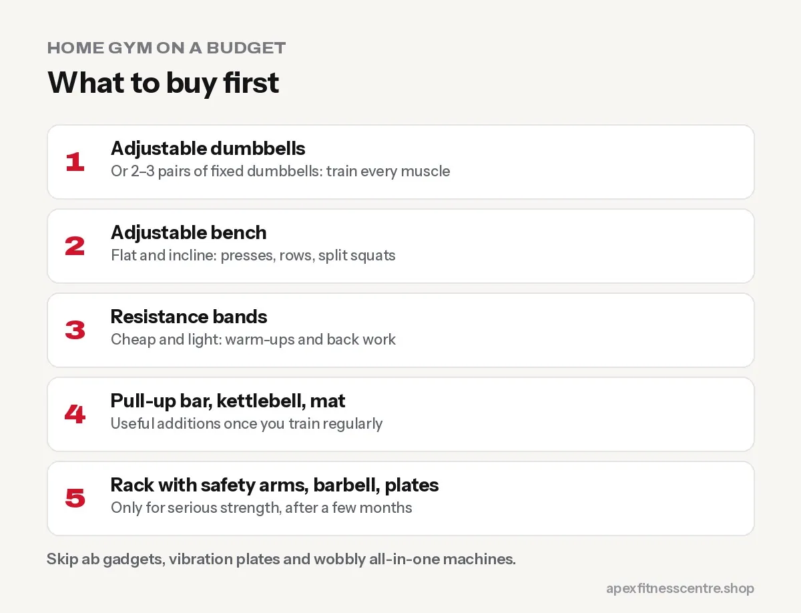

How to Build a Home Gym on a Budget (What to Buy First)
Build a home gym that actually works without wasting money. What to buy first, in order, a starter setup for small spaces, and three full workouts.

The best budget home gym starts with just three things: adjustable dumbbells (or a few pairs of fixed dumbbells), a sturdy adjustable bench, and resistance bands. With those, you can train every major muscle. Add a pull-up bar, a kettlebell and a floor mat next, and only buy bigger items like a squat rack or barbell once you’ve trained consistently for a few months.
Home gyms are hugely popular, but many people waste money on gadgets that end up holding laundry. This guide shows what actually gets used, in the order to buy it.
Before you buy anything
Ask yourself three questions:
- What’s my goal? General fitness, fat loss, or building as much muscle and strength as possible?
- How much space do I have? A corner of a bedroom is enough for a great dumbbell setup.
- Will I train at home consistently? If you’re not sure, start with bodyweight training and bands for a month. Try our home workout without equipment.
The buying order

Stage 1: The essentials
| Item | Why it’s first | Tip |
|---|---|---|
| Adjustable dumbbells (or 2–3 fixed pairs) | Train every muscle; easy to add weight | Pick a range that will still challenge your legs in 6 months |
| Adjustable bench (flat and incline) | Presses, rows, step-ups, split squats | Check the weight limit and stability |
| Resistance bands (loop and handle types) | Cheap, light, great for warm-ups and back work | Buy a set with different strengths |
Stage 2: Useful additions
| Item | Why |
|---|---|
| Doorway pull-up bar | Pull-ups and hanging core work. Check your door frame first. |
| One kettlebell | Swings, goblet squats, carries |
| Exercise mat | Core work, stretching, floor protection |
Stage 3: Serious strength (optional)
| Item | Why |
|---|---|
| Squat rack with safety arms | Safe heavy squats and bench presses |
| Barbell and plates | Heavy squats, deadlifts and presses |
| Rubber flooring | Protects the floor and reduces noise |
Only buy stage 3 if you’ve been training consistently for a few months and want to lift heavier than dumbbells allow. Always use safety arms when lifting heavy alone.
Things you can skip
- Ab rollers and ab machines with big promises. Planks and dead bugs do the job.
- Vibration plates and “toning” gadgets.
- All-in-one home “gym machines” with many pulleys, which are often wobbly and limiting.
- Very light, colourful dumbbells you’ll outgrow in weeks (unless they’re for warm-ups).
Three home workouts with dumbbells
Do each workout once a week, with a rest day between. Choose a weight you could lift 2–3 more times at the end of each set.
Workout A: legs and push
| Exercise | Sets × reps |
|---|---|
| Goblet squat | 3 × 10–12 |
| Dumbbell bench press | 3 × 8–12 |
| Split squat (back foot on bench) | 3 × 8–10 each leg |
| Seated shoulder press | 3 × 10 |
| Plank | 3 × 30–45 sec |
Workout B: pull and hinge
| Exercise | Sets × reps |
|---|---|
| Romanian deadlift | 3 × 10 |
| One-arm dumbbell row | 3 × 10 each side |
| Pull-ups or band pull-downs | 3 × as many as you can |
| Hip thrust (shoulders on bench) | 3 × 12 |
| Dead bug | 3 × 10 each side |
Workout C: full body
| Exercise | Sets × reps |
|---|---|
| Step-ups onto the bench | 3 × 10 each leg |
| Incline dumbbell press | 3 × 10 |
| Band face pulls | 3 × 15 |
| Kettlebell or dumbbell swings | 3 × 15 |
| Farmer’s carry | 4 × 30–40 m |
How to keep making progress at home
The biggest limit of a home gym is running out of weight. To keep improving:
- Add reps before adding weight
- Slow the lowering phase to 3 seconds
- Use single-leg and single-arm exercises, which are harder with the same weight
- Add a pause at the hardest point
- Upgrade your dumbbells when you can do 15+ good reps on most exercises
Home gym vs gym membership
| Home gym | Gym membership | |
|---|---|---|
| Upfront cost | Higher | Low |
| Ongoing cost | Almost none | Monthly fee |
| Equipment range | Limited | Wide |
| Coaching | You’re on your own | Trainers available |
| Motivation | Depends on you | Training around others helps many people |
| Travel time | None | Some |
Many people do both: train at the gym most weeks and keep dumbbells at home for busy days.
Frequently asked questions
What is the first thing to buy for a home gym?
Adjustable dumbbells or a few pairs of fixed dumbbells. They’re the most versatile piece of equipment.
Can you build muscle with a home gym?
Yes. With progressive overload, good form and enough protein, dumbbells and a bench are enough to build plenty of muscle, especially for beginners and intermediates.
How much space do I need for a home gym?
A space of roughly 2 × 2 metres is enough for dumbbells, a bench and a mat. A squat rack needs much more room and ceiling height.
Are resistance bands as good as weights?
They’re excellent for warm-ups, back exercises and travel, but most people build strength faster with dumbbells for the big movements.
Is a home gym worth it?
If you’ll train at home regularly, yes. If you need structure, coaching or company, a gym membership may suit you better.
Sources
- ACSM position stand: progression models in resistance training for healthy adults (American College of Sports Medicine, 2009)
- WHO fact sheet: physical activity (World Health Organization)
General information. We aren’t paid to recommend any equipment brand. Always follow manufacturers’ safety instructions and weight limits.
General information, not medical advice. Ask a doctor if you have a health condition. Results vary from person to person.
Comments
Loading comments…